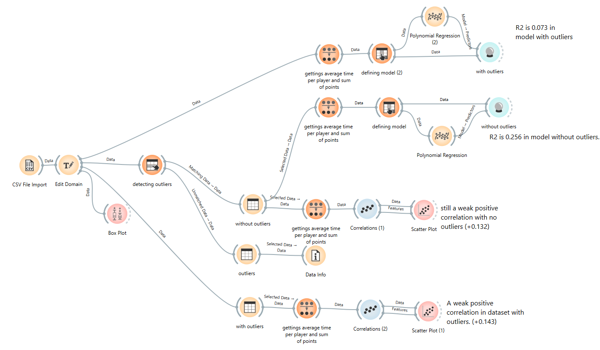
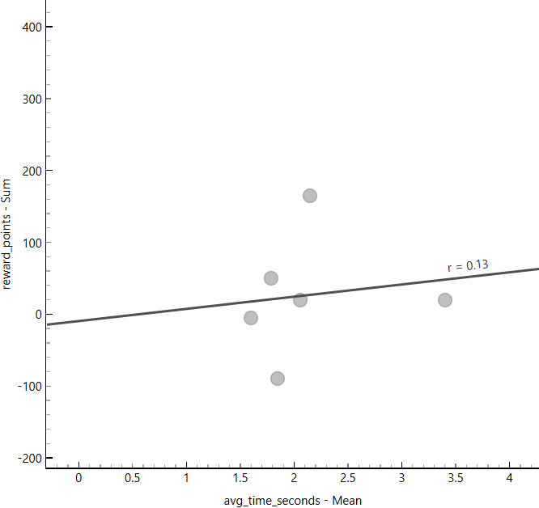

Data exploring
Analyzing data
We gathered certain information according to players' gameplay style and conducted regression and correlation analysis
Data exploring images


Analysis summary
- What do the numbers say?
- RMSE above 65 indicates high data dispersion, which is confirmed by the correlation and regression models.
- Interesting notes
- The dataset covers 50 games but only 5 players, which limits its scalability. The model without outliers, despite a lower correlation ratio, has a higher R² and is therefore more representative.
Moves list
Stats controls
| PLAYER | GAME | OUTCOME | DURATION (S) | OUTLIER |
|---|